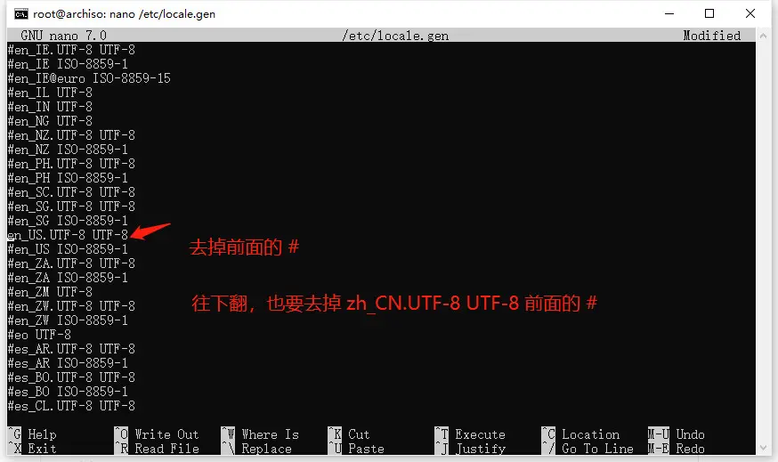
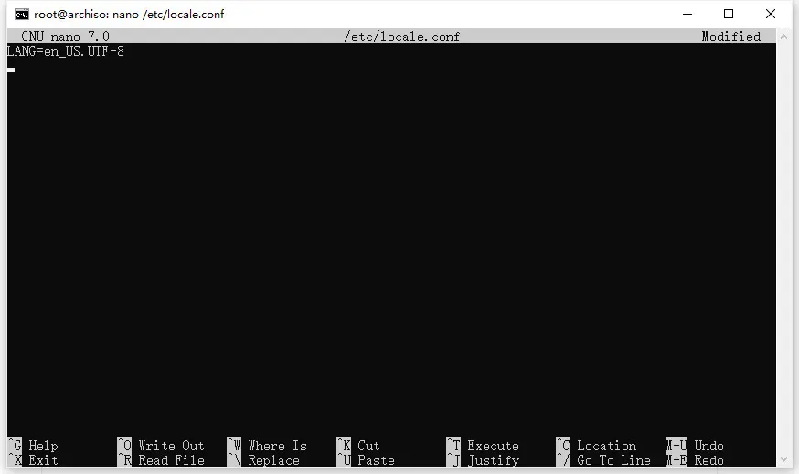
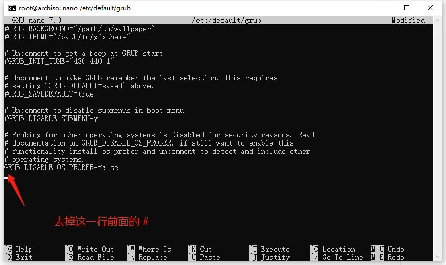

Archlinux安装
GRUB设置
闪屏：i915.enable_psr=0
将nomodeset添加到内核命令行来关闭KMS（即进入grub选择界面时按e） 永久的方法是在/etc/default/grub中的这一行加上nomodeset
GRUB_CMDLINE_LINUX_DEFAULT="loglevel=3 quiet nomodeset"然后执行以下命令更新
grub-mkconfig -o /boot/grub/grub.cfg但这可能会导致一些桌面特效无法使用等其他问题。 如果是笔记本，闪屏的另外一个原因可能是由于面板自我刷新（英特尔iGPUs的省电功能）。解决方法是将
i915.enable_psr=0添加到内核命令行关闭此功能
笔记本键盘失效：i8042.dumbkbd
固件或内核的bug会导致ACPI PNP设备显示为可用，进而导致i8042模块检测到AUX端口，这些端口在恢复期间被探测，这会导致键盘停止工作。解决方法是将i8042.noaux添加到内核命令行。在使用电池启动时，更可能出现此问题。 对于新机型可能参数不一样，可以去搜一搜wiki，我在wiki中找到了我的电脑（Lenovo Yoga 14s 2021），加入的内核命令行参数为
i8042.dumbkbdlive
制作arch系统盘，进入live环境，先联网
有线
# 自动获取ip
dhcpcd无线
# 查看网卡
ip link
wpa_supplicant -D wext -B -i <设备名> -c <(wpa_passphrase <wifi 名称> <wifi 密码>)
根据实际情况替换括号内的内容，例如：# wpa_supplicant -D wext -B -i wlan0 -c <(wpa_passphrase TP-LINK_home Kc0ver)
-D wext 的意义是使用 wext 驱动网卡，-B 是后台运行，-i 是指定设备，-c 是指定配置文件，而后面的内容是根据网络情况生成配置文件，这条长命令本质是两条段命令结合而成的，配置文件不会生成为文件而是直接使用。
iwctl --passphrase 密码 station 无线网卡名 connect 无线名称
station list
device list
device wlan0 show
station wlan0 scan
station wlan0 get-network
station wlna0 connect ssid校对时间
使用 timedatectl 修改时区：
timedatectl set-timezone Asia/Shanghai随后使用 date 命令检查时间是否正确：
date输出应该是这样的：
Sun Dec 25 20:45:32 CST 2022时间正确即可进行下一步。
分区
使用 fdisk 列出硬盘和分区情况：
fdisk -l之后使用以下命令进入图形化的分区修改界面：
cfdisk <硬盘编号>设置好分区后记住编号，再格式化：
# 系统分区：
mkfs.ext4 <分区编号>
# EFI 分区（如果有）：
mkfs.fat -F 32 <分区编号>
# 交换分区（如果有）：
mkswap <分区编号>
# 启动交换分区（如果有）：
swapon <分区编号>
# 挂载即将安装系统的分区：
mount <分区编号> /mnt修改镜像源
Arch Linux 的优势在于可以自由安装系统的每个部分，甚至是内核，中国的用户在安装之前要先更换软件镜像源，使用以下命令编辑源列表：
nano /etc/pacman.d/mirrorlist在第一行加入：
Server = https://mirrors.tuna.tsinghua.edu.cn/archlinux/$repo/os/$arch
Server = https://mirrors.ustc.edu.cn/archlinux/$repo/os/$arch刷新软件包列表：
pacman -Syy安装 archlinux-keyring 包：
pacman -S archlinux-keyring安装系统
这样就可以获得较快的下载速度，使用以下指令安装基本系统：
pacstrap /mnt base base-devel linux linux-firmware linux-headers这样只是最基本的系统，还需要更多的软件来支持系统运行，以下是作者认为需要安装的
- networkmanager - 连接互联网（不用 netctl）
- dhcpcd - 分配 ip 地址
- openssh - ssh服务
- cups - 打印机
- nano 或 micro - 都是好用的命令行文本编辑器，micro 的快捷键更接近 Windows 自带的记事本。
- git - 100%会用到的，现在不装以后也会被当作依赖安装
- grub - 必须安装，引导系统用
- os-prober - 双系统必须安装
- efibootmgr - UEFI 必须安装
- intel-ucode 或 amd-ucode - CPU 微码必须安装
- man-db 和 man-pages - 查看软件包的文档
- ntfs-3g - 只读挂载 ntfs 分区（访问 Windows 文件）双系统必须安装
- firefox - 浏览器
- noto-fonts-cjk 和 noto-fonts-emoji - 谷歌设计的字体（包含中文和 emoji）
将需要安装的软件包添加在 pacstrap 命令中一并安装，如果有其他的软件包需要安装也可以在这里安装。
设置新系统
挂载 EFI 分区（如果有）：
mkdir /mnt/boot/efi
mount <EFI 分区编号> /mnt/boot/efi创建 fstab 文件：
genfstab -U /mnt >> /mnt/etc/fstabchroot 进入新系统：
arch-chroot /mntchroot 相当于不重启进入位于挂载点 /mnt 的新系统中，可以在安装设置与急救系统方面发挥作用。chroot 后，做出的设置将会保留在新系统中。（可移植）
正如其名 **arch-**chroot，这个命令可以自动处理一些 chroot 参数以达到易用的特性。
如果使用 pacstrap 安装基本系统的步骤没有做好，chroot 时就会出现报错，一般是提示找不到 /bin/bash，但是有一些情况下正确配置也会出现这个问题，我无法复现出这个错误，因此请仔细检查要 chroot 的挂载点和 pacstrap 的安装位置。
设置时区：
ln -sf /usr/share/zoneinfo/Asia/Shanghai /etc/localtime生成 /etc/adjtime：
hwclock --systohc编辑 locale.gen 和 locale.conf：
nano /etc/locale.genlocale.gen 和 locale.conf 有关系统的语言，是本地化的步骤。

运行 locale-gen：
locale-gen编辑 /etc/locale.conf： 
编辑主机名：
nano /etc/hostname设置 root 密码：
passwd root安装 grub 引导：
如果是双系统，需要启用 os-prober 发现其他操作系统（比如 Windows）。
编辑 grub 配置文件：
nano /etc/default/grub
接下来便可以安装 grub 到硬盘，
# 传统引导：
grub-install --target=i386-pc <硬盘号>
grub-mkconfig -o /boot/grub/grub.cfg
# UEFI 引导：
grub-install --target=x86_64-efi --efi-directory=/boot/efi --bootloader-id=GRUB
grub-mkconfig -o /boot/grub/grub.cfgArch 安装后Grub无法引导的解决方法
首先，仅对UEFI有效
这个问题常出现在全新安装中，比如虚拟机
问题原因在于需要开启boot分区的“bootable flag”
开启方法：
挂载boot分区
mount /dev/sda1 /boot
使用“parted”工具，“set 1 boot on”'
parted
set 1 boot on
重新执行“grub-install”与“grub-mkconfig”：
grub-install --target=x86-64-efi --efi-directory /boot --bootloader-id=GRUB
grub-mkconfig -o /boot/grub/grub.cfg
服务自启动：
# 打印机（如果需要）：
systemctl enable cups
# ssh 服务：
systemctl enable sshd
# 网络服务：
systemctl enable NetworkManager dhcpcd创建普通用户：
useradd -m <用户名> -G wheel
# 用户组设置为 wheel 是因为 wheel 在 /etc/passwd中包含，如果你有能力可以设置为其他的组或者自建组。编辑 sudoers 文件赋予用户管理员权限：
nano /etc/sudoers改密码：
passwd <用户名>输入法fcitx5
https://wiki.archlinux.org/title/Fcitx5
软件安装
linuxqq
wechat
wemeet
obs
typora
vscode
finalshell
zotero外观缩放设置
-
全局缩放
-
字体固定dpi
-
字体大小
-
单个程序单独缩放
具体见官方wiki https://wiki.archlinux.org/title/HiDPI
常用命令
pacman
pacman -S
pacman -Sy 更新库
pacman -Syy 强制更新库
pacman -Syu 更新包
pacman -R
pacman -Rs 删除该包及不被需要的依赖（安全）
pacman -Rsu 删除该包及其依赖
pacman -Rsc 删除该包及依赖该包的所有包
pacman -Rdd 删除该包，不删除依赖该包的所有包
pacman -Sc 删除非安装包的缓存
pacman -Scc 删除所有包的缓存
pacman -Ss 关键字: 在仓库中搜索含关键字的软件包（本地已安装的会标记）
pacman -Qs 关键字: 搜索已安装的软件包
pacman -Qu: 列出所有可升级的软件包
pacman -Qt: 列出不被任何软件要求的软件包paru
paru集成pacman中的功能，可以只用paru 查找core,commity,extra,archlinuxcn,aur的包
paru <target> 查找包
paru 别名 for paru -Syu
paru -S <target> 安装指定包
paru -Sua -- 更新所有AUR包
paru -Qua -- 打印所有AUR包可用更新
paru -G <target> -- Download the PKGBUILD and related files of `<target>`.
paru -Gp <target> -- Print the PKGBUILD of `<target>`.
paru -Gc <target> -- Print the AUR comments of `<target>`.
paru --gendb -- Generate the devel database for tracking `*-git` packages. This is only needed when you initially start using paru.
paru -Ui -- Build and install a PKGBUILD in the current directory.arch快速安装总结
# live引导时 加入
i915.enable_psr=0 i8042.dumbkbd
# 进live
iwctl --passphrase 密码 station 无线网卡名 connect 无线名称
timedatectl set-timezone Asia/Shanghai
# 分区
fdisk -l
cfdisk <硬盘编号>
mkfs.ext4 <分区编号>
mkfs.fat -F 32 <分区编号>
mkswap <分区编号>
swapon <分区编号>
mount <分区编号> /mnt
# 安装系统
nano /etc/pacman.d/mirrorlist
# 这里用http快
Server = http://mirrors.bfsu.edu.cn/archlinux/$repo/os/$arch
pacstrap /mnt base base-devel linux linux-firmware linux-headers networkmanager nano grub os-prober efibootmgr intel-ucode ntfs-3g firefox noto-fonts-cjk noto-fonts-emoji
mkdir /mnt/boot/efi
mount <EFI 分区编号> /mnt/boot/efi
genfstab -U /mnt >> /mnt/etc/fstab
arch-chroot /mnt
ln -sf /usr/share/zoneinfo/Asia/Shanghai /etc/localtime
hwclock --systohc
nano /etc/locale.gen
locale-gen
passwd root
# 这里添加i915.enable_psr=0 i8042.dumbkbd 和开启os-prober
nano /etc/default/grub
# 临时挂载windows efi盘到/boot/efi/EFI/win开启grub双系统引导
grub-install --target=x86_64-efi --efi-directory=/boot/efi --bootloader-id=GRUB
grub-mkconfig -o /boot/grub/grub.cfg
systemctl enable NetworkManager
useradd -m <用户名> -G wheel
nano /etc/sudoers
passwd <用户名>
# 安装桌面 使用kde wayland
sudo pacman -S passwd plasma-meta plasma-wayland-session konsole dolphin blues-utils sof-firmware
sudo systemctl enable bluetooth
# fcitx5
sudo pacman -S fcitx5-im fcitx5-chinese-addons
/etc/envirment
GTK_IM_MODULE=fcitx
QT_IM_MODULE=fcitx
XMODIFIERS=@im=fcitx
SDL_IM_MODULE=fcitx
GLFW_IM_MODULE=ibus
sudo mkdir /mnt/win
# /etc/fstab 自动挂载win10
/dev/nvme0n1p3 /mnt/win ntfs defaults 0 0
# oh my zsh
sudo pacman -S zsh
sh -c "$(curl -fsSL https://raw.githubusercontent.com/ohmyzsh/ohmyzsh/master/tools/install.sh)"
chsh -s /bin/zsh
konsole中改设置
git clone https://github.com/zsh-users/zsh-syntax-highlighting.git ${ZSH_CUSTOM:-~/.oh-my-zsh/custom}/plugins/zsh-syntax-highlighting
git clone https://github.com/zsh-users/zsh-autosuggestions ${ZSH_CUSTOM:-~/.oh-my-zsh/custom}/plugins/zsh-autosuggestions
plugins=(git zsh-syntax-highlighting zsh-autosuggestions)
Consolas, 'Courier New', monospace